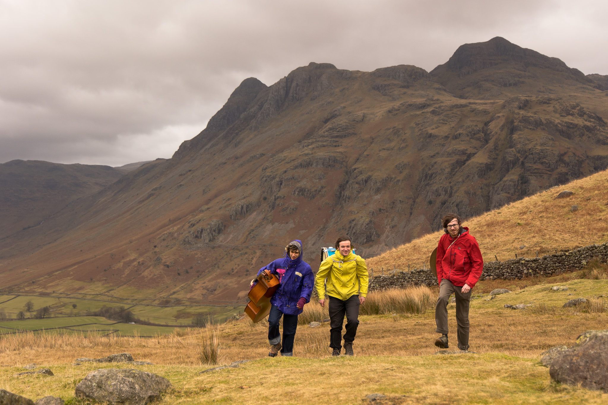
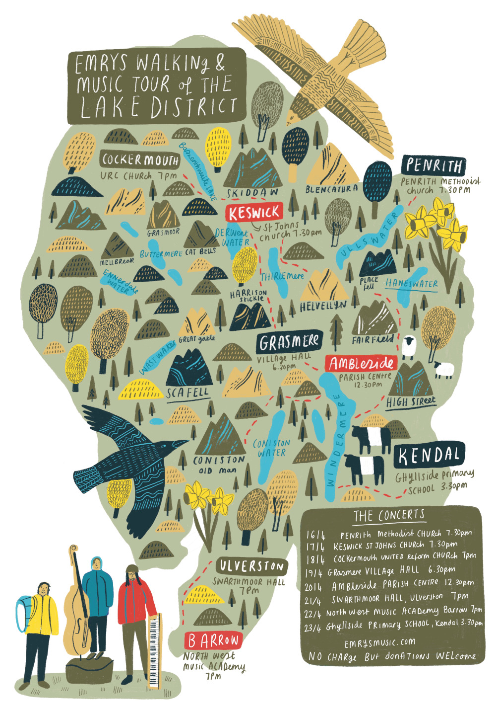
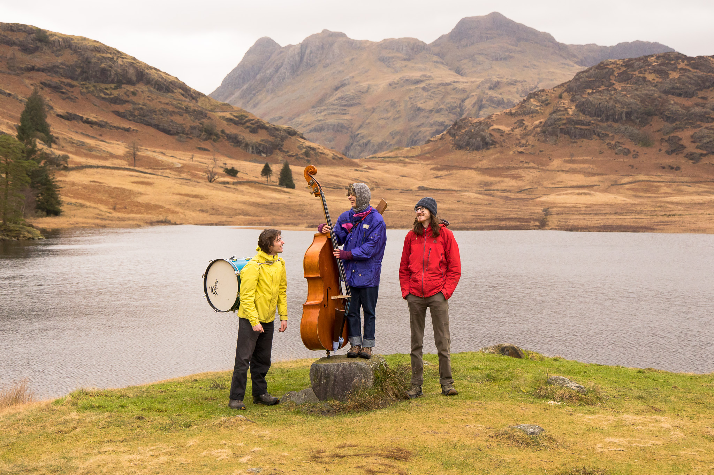

…Walking to a venue near you…
In spring 2026, EMRYS will embark on a ‘Walking and Music Tour’ of the Lake District.
Inspired by Poet Laureate Simon Armitage’s book ‘Walking Home’ and a quest to create music in resonance with our surrounding landscapes, we’ll travel across the mountains, valleys and waterways of the Lake District on foot, with each day's walk leading to a concert in churches, village halls, schools, and community spaces.
Each concert will be recorded by Samuel Hollis from Salthouse Recordings, and these will be compiled to form a debut album.
The tour is partly funded by the ‘Principals Award for Innovation’ received by Sam (EMRYS drummer), upon his graduation from Trinity Laban Conservatoire of Music and Dance in 2025. Read More Here
Anyone is welcome to join us on each day's walk. Scroll down for more details and concerts.
Akin to Armitage's troubadourian trek we would greatly appreciate any help from the locals, be it a place to stay, dinner or packed lunch. Please get in touch at emrystrio@gmail.com if you are able to help out!

Please note, there is no charge to come to the concerts. We’ll be taking donations towards the project at each venue. All are welcome.
Walking routes and start times may change nearer the time depending on weather etc. Please sign up to our mailing list to recieve any last minute changes.
Please note that you are responsible for yourself and your equipment. By joining us on the walk you understand that you walk at your own risk and are expected to walk in a safe and considerate manner. Each walker is responsible for their own actions, and EMRYS carries no liability.
Remember to bring:
-Full waterproofs (whatever the weather!)
-Boots/sturdy shoes
-Mobile (fully charged)
-Something for lunch
-Snacks, water
Greatest cake most welcome! ;)

Thursday 16th April
Walk: Troutbeck to Patterdale
Meet place: Troutbeck Jesus Church, LA23 1PQ - (what3words: ///prouder.senses.album)
Meet time: 8.15am
Endpoint: Patterdale Hotel
Route: via High street
Est. 12 miles
Concert: Penrith Methodist Church, 7:30pm
Tea and coffee provided, bring and share cakes
Friday 17th April
Walk: Patterdale to Thirlmere
Meet Place: Patterdale Hotel, CA11 0NN (what3words: ///adjust.various.gazes)
Meet time: 9am
Endpoint: Legburthwaite (north end of Thirlmere)
Route: via Helvellyn (Swirral edge)
Est. 8 miles
Optional extra: Time/weather dependent, there's the option to walk all the way to Keswick, 13 mile walk in total
Note: Bus connections to Keswick or Ambleside at the end of the walk
Concert: Keswick St John’s Church, 7:30pm
Bar available, bring and share cakes
Saturday 18th April
Walk: Keswick to Bassenthwaite
Meet place: Keswick St John’s Church, CA12 4DD (what3words:///goal.providing.lyrics.)
Meet time: 9am
Endpoint: St Bega’s Church by Bassenthwaite Lake, CA12 4QE
Route: via Skiddaw
Est. 9 miles
Note: Bus connections available to Cockermouth or Keswick from near the end of the walk
Concert: Cockermouth United Reform Church, 7pm
Tea and coffee provided, bring and share cakes
Sunday 19th April
Walk: Derwentwater to Grasmere
Meet place: Cat Bells Car Park, Gutterscale CA12 5UE (what3words:///locate.resurgent.sparkle)
Meet time: 8:30am
Endpoint: Grasmere Village Hall
Route: via Borrowdale, Grasmere Common
Est. 14 miles
Note: You can reach Cat Bells Car Park by bus
Concert: Grasmere Village Hall, 6:30pm
Bar available, bring and share cakes
Monday 20th April
Walk: Grasmere to Ambleside
Meet place: Grasmere Village Hall, LA22 9TA (what3words:///pleaser.umbrellas.sings)
Meet time: 7:45am
Endpoint: Ambleside Parish Centre
Est. 6 miles
Concert: Ambleside Parish Centre, 12.30pm
Tea and coffee provided, bring and share cakes
Tuesday 21st April
Walk: Little Langdale to Coniston
Meet place: Three Shires Inn, Little Langdale, LA22 9NZ (what3words:///refreshed.attention.shoelaces)
Meet time: 9:15am
Endpoint: Coniston Town Centre (Coniston Institute)
Route: via Wetherlam, Swirl How and Coniston Old Man
Est. 8 miles
Concert: Swarthmoor Hall, Ulverston, 7pm
Refreshments available
Wednesday 22nd April
Walk: Ulverston to Barrow
Meet place: Swarthmoor Hall, LA12 0JQ (what3words: ///breath.strikers.subject)
Meet time: 8:45am
Endpoint: North West Music Academy, Barrow
Route: via the coast
Est. 13 miles
Concert: North West Music Academy, Barrow-in-Furness, 7pm
Refreshments available
Thursday 23rd April
Walk: Staveley to Kendal
Meet pace: More? Bakery, Staveley LA8 9LR (what3words: ///musician.ember.hoops)
Meet time: 8:15am
End point: Ghyllside Primary School, Kendal
Route: via Potter Fell
Est. 8 miles
Concert: Ghyllside Primary School, Kendal, 3:30pm




Photographs © Jumpy James
Map © Kate Sutton